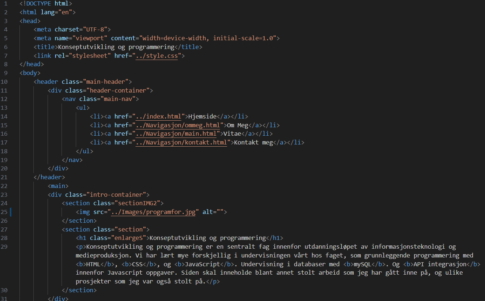
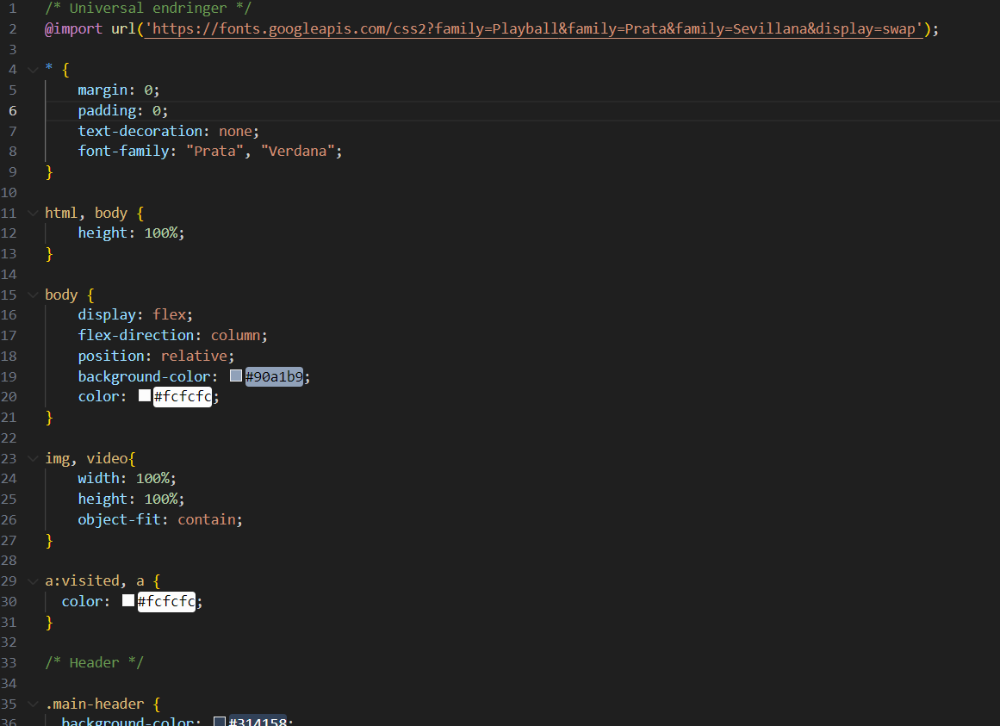
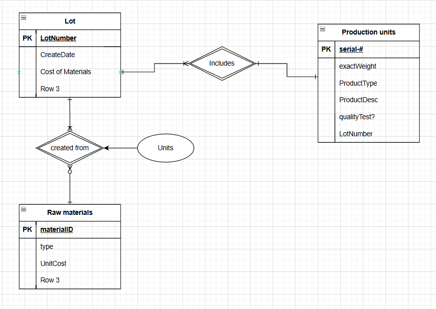
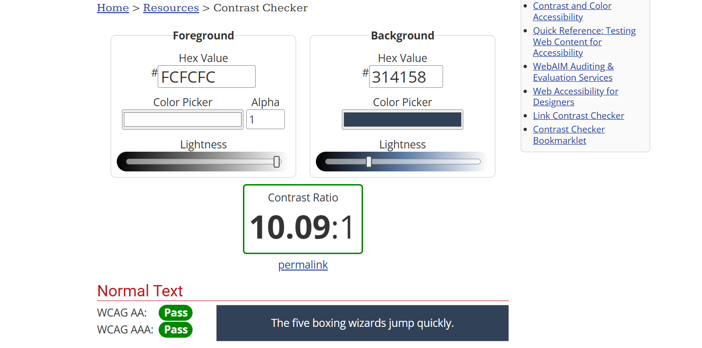
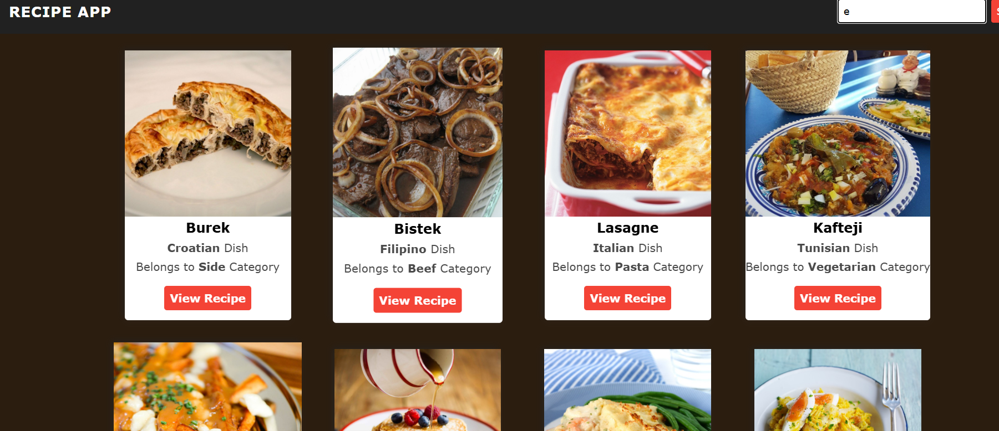

Konseptutvikling og programmering
Konseptutvikling og programmering er en sentralt fag innenfor utdanningsløpet av informasjonsteknologi og medieproduksjon. Vi har lært mye forskjellig i undervisningen vårt hos faget, som grunnleggende programmering med HTML, CSS, og JavaScript. Undervisning i databaser med mySQL. Og API integrasjon innenfor Javascript oppgaver. Siden skal inneholde blant annet stolt arbeid som jeg har gått inne på, og ulike prosjekter som jeg var også stolt på.
HTML
HTML (Hypertext Markup Language) Er en Markup språk, som kort talt forteller web-browseren hva å vise, og skiller seg fra kodespråk ved å ikke kunne klare kalkulasjoner. Vi lærte HTML som første steg i undervisningen av grunnleggende programmering, og har drevet med det i nesten alle prosjekter. Vi har lært masse ting, som hva de ulike HTML elementer gjør/har innhold av og hvordan vi gir god oversikt over kodestrukturen vår med semantic HTML.

CSS
CSS (Cascading Style Sheets) er en deklarativt språk som forteller web-browseren hvordan ting skal se ut og manipulerer verdier som farge og størrelse. Sammen med HTML skiller seg fra kodespråk ved å ikke kunne klare kalkulasjoner. Vi brukte CSS i sammenheng med HTML til å gi nettsidene våres stil og dekorativt estetisk.

JavaScript
Første kodespråk vi jobbet med, og ga oss mulighet til å gi ulike funksjoner til nettsiden vår. Blant disse funksjoner var vanligst brukt: kalkulasjoner av verdier, manipulasjon av HTML elementer og overalt gir oss mulighet til å skape interaktivitet.
MySQL
Et liten gjennomgang innenfor databaser som vi skal drive med mere neste år. Vi fikk arbeidet med nøkkler, som forteller oss en unik ID om en spesefikk gruppe/person, og hvordan å sette opp en enkel database med MySQL.

UU - Universal Utforming
En gjennomgang innenfor emnet av å tilpasse nettsidene våres med funksjonalitet slik at alle personer av ulike grupper/tilstand kan samhandle med det. Vi lærte kontrast-sammenheng, enkel navigasjon og at nettsiden er robust.

API
Vårt siste emne i Konseptutvikling og programmering denne året. API (Application Programming Interface) kan bli forklart som en set av regler som gir tilgang til at vår nettsiden kan kommunisere med nett-ressurser og få tilgang til innholdet. Vi brukte API til å få tilgang og legge til data til vår nettside.

Sluttrefleksjon - Hva har jeg lært?
Til slutt, har jeg lært masse om programmering og grunnleggende nettside oppsett. Jeg har fått til mye denne året, der jeg jobber med denne nettsiden, og har jobbet på prosjekter som trenger grunnleggende forståelse av koding og programmering. Alt i alt, har jeg vært stolt av: